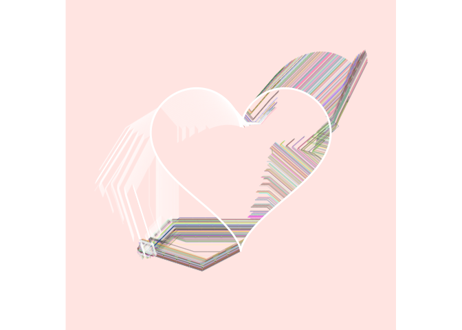
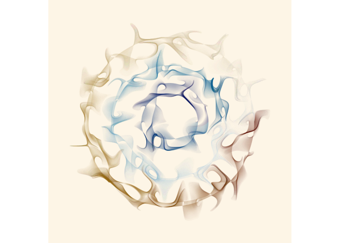

The jasmines package is what I use to make a lot of my generative artwork with R. Internally it relies heavily on the ambient package, and you may need to install the developer version of ambient to make it work:
# install.packages("remotes")
# remotes::install_github("thomasp85/ambient")
remotes::install_github("djnavarro/jasmines")Functions in the jasmines package are designed to work with the dplyr pipe, so you will likely want to have dplyr loaded:
Example 1
A typical jasmines pipeline looks like this:
use_seed(1) %>%
entity_circle(grain = 1000) %>%
unfold_tempest(iterations = 10) %>%
style_ribbon(background = "wheat")
The use_seed() function is a convenience function that sets the random number generator seed, and stores that value for later use. The seed is then piped to an entity_ function (or a scene_ function) that creates the initial object that will be operated upon. In this case this initial object is a circle of diameter 2 rendered using 1000 points. This is then passed to an unfold_ function, that iteratively applies some operation (in this case the “warp”) operation for some number of steps (in this case 100). The object is converted to a ggplot2 image using one of the style_ functions. In this and most cases the style_ribbon() is used and has several customisable finctions.
Example 2
use_seed(1) %>%
entity_circle(grain = 1000, size = 2) %>%
unfold_warp(iterations = 100) %>%
style_ribbon(palette = "rainbow")
Example 3
An example where the initial object is created with entity_heart(), the unfolding performed by unfold_slice() and the styling is more elaborate.
use_seed(1) %>%
entity_heart(grain = 1000) %>%
unfold_slice(iterations = 10) %>%
style_ribbon(
palette = "base",
colour = "ind",
background = "mistyrose"
) %>%
style_overlay(border = "white")
Example 4
It is possible to create “scenes” comprised of multiple entities as the initial starting point, apply multiple unfolding operations, and modify the way transparency and colouring is done.
use_seed(1) %>%
scene_discs(
rings = 3, points = 5000, size = 5
) %>%
mutate(ind = 1:n()) %>%
unfold_warp(
iterations = 1,
scale = .5,
output = "layer"
) %>%
unfold_tempest(
iterations = 20,
scale = .01
) %>%
style_ribbon(
palette = palette_named("vik"),
colour = "ind",
alpha = c(.1,.1),
background = "oldlace"
)